Minecraft Alpha 1.1.2_01
Blocks in this Version:
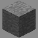
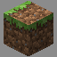
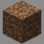
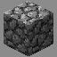
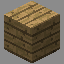
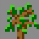
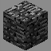
 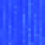
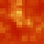
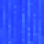
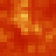
 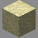
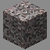
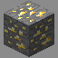
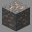
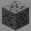
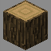
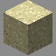
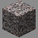
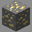
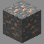
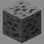
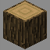
 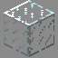
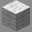
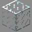
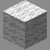

 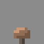
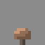
 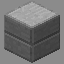
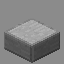
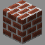
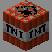
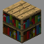
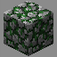
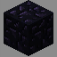
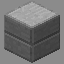
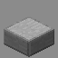
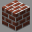
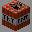
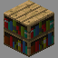
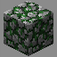
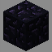
 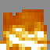
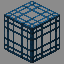
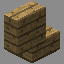
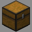
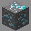
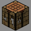
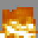
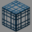
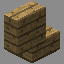
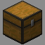
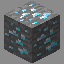
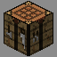

 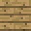
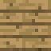

 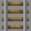
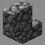
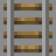
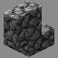

 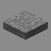
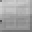
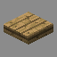
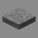
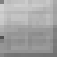
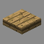
 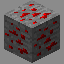
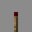
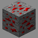
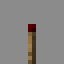
 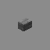
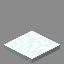
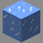
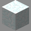
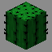
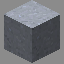
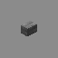
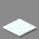
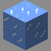
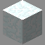
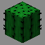
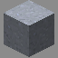
 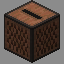
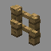
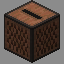
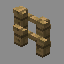
Items in this Version:
Iron Shovel, Iron Pickaxe, Iron Axe, Flint and Steel, Apple, Bow, Arrow, Coal, Charcoal, Diamond, Iron Ingot, Gold Ingot, Iron Sword, Wooden Sword, Wooden Shovel, Wooden Pickaxe, Wooden Axe, Stone Sword, Stone Shovel, Stone Pickaxe, Stone Axe, Diamond Sword, Diamond Shovel, Diamond Pickaxe, Diamond Axe, Stick, Bowl, Mushroom Stew, Golden Sword, Golden Shovel, Golden Pickaxe, Golden Axe, String, Feather, Gunpowder, Wooden Hoe, Stone Hoe, Iron Hoe, Diamond Hoe, Golden Hoe, Wheat Seeds, Wheat, Bread, Leather Helmet, Leather Tunic, Leather Pants, Leather Boots, Chainmail Helmet, Chainmail Chestplate, Chainmail Leggings, Chainmail Boots, Iron Helmet, Iron Chestplate, Iron Leggings, Iron Boots, Diamond Helmet, Diamond Chestplate, Diamond Leggings, Diamond Boots, Golden Helmet, Golden Chestplate, Golden Leggings, Golden Boots, Flint, Raw Porkchop, Cooked Porkchop, Painting, Golden Apple, Enchanted Golden Apple, Sign, Wooden Door, Bucket, Water Bucket, Lava Bucket, Minecart, Saddle, Iron Door, Redstone, Snowball, Boat, Leather, Milk Bucket, Brick, Clay, Sugar Cane, Paper, Book, Slimeball, Minecart With Chest, Minecart With Furnace, Egg, Compass, Fishing Rod
Mobs in this Version:
Creeper, Skeleton, Zombie, Spider, Giant, Slime
Pig, Sheep, Cow, Chicken
Features in this Version:
Dungeons can generate (even with hostile mobs disabled)
Snow Worlds
Other Information:
Due to a glitch with terrain generation, you can find pillars commonly called monolithes.